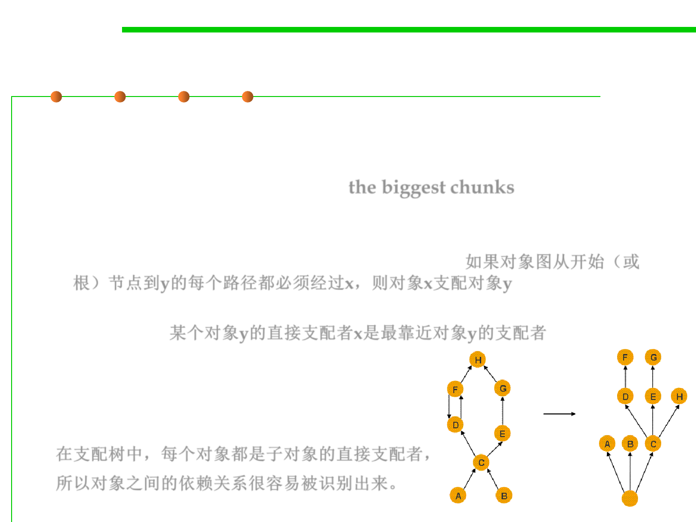

Dominator tree
8.2 Dynamic Program Analysis Methods and Tools
▪ Memory Analyzer provides a dominator tree of the object graph.
▪ The transformation of the object reference graph into a dominator
tree allows you to easily identify the biggest chunks of retained
memory and the keep-alive dependencies among objects.
– An object x dominates an object y if every path in the object graph from
the start (or the root) node to y must go through x. 如果对象图从开始（或
根）节点到y的每个路径都必须经过x，则对象x支配对象y
– The immediate dominator x of some object y is the dominator closest to
the object y. 某个对象y的直接支配者x是最靠近对象y的支配者
– In the dominator tree each object is
the immediate dominator of its
children, so dependencies between
the objects are easily identified.
在支配树中，每个对象都是子对象的直接支配者，
所以对象之间的依赖关系很容易被识别出来。